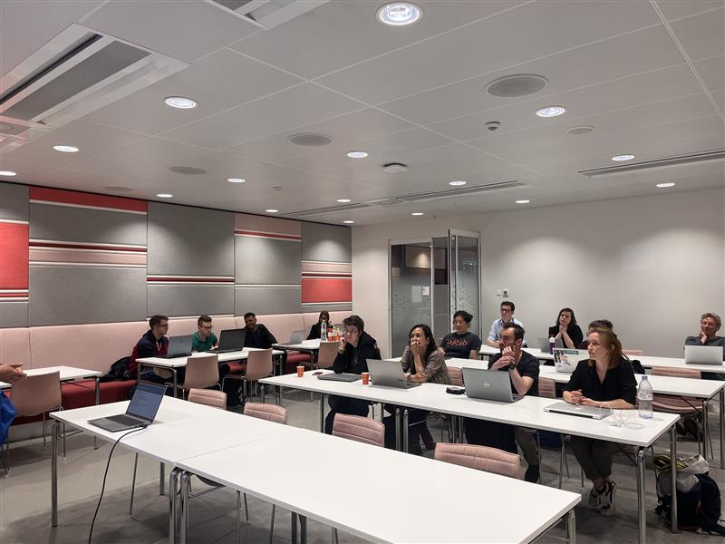
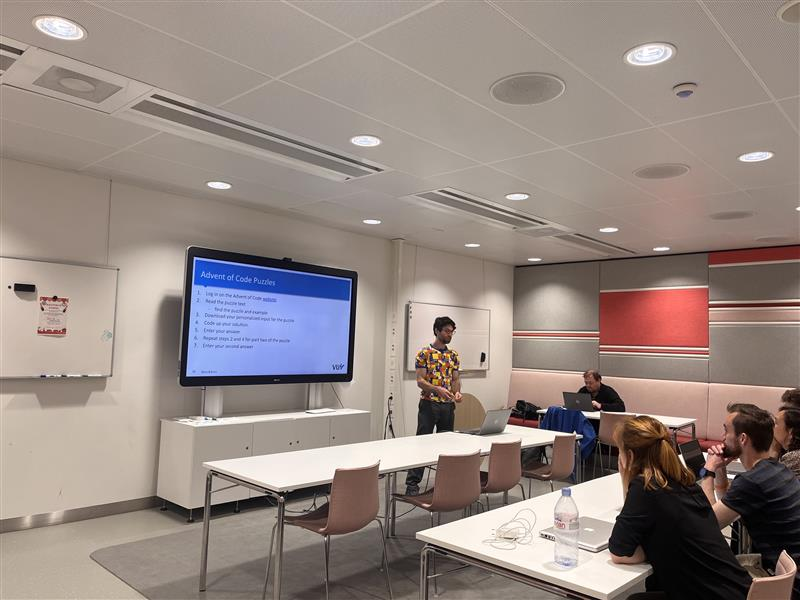

Vrije Universiteit Amsterdam: Bytes & Bites
Do you want to meet other researchers, improve your programming skills, or ask questions related to programming? Pick up your laptop and come to the first edition of the Bytes & Bites.
Website: https://ubvu.github.io/bytes-and-bites/


Who we are
We are newcomers in the landscape of programming cafes in the Netherlands, but determined to establish Bytes & Bites as a constant in everyone’s calendars.
Bytes & Bites has been running monthly meetings since April 2023 and was inspired by Utrecht University’s Programming Café and the Programming Café at TU Delft. Our journey started at the university library with organizing Carpentry courses for software beginners, but mastering the art of programming requires constant challenges. Where can you get help when you’re stuck and how can programming stay fun? Most of the programming initiatives at the VU focus on a specific community and are not open for everyone. Thus we joined forces with already existing software communities and created an event series that does not replace any other community events, but rather connects existing initiatives.
With Bytes & Bites our dream of an inclusive software community event became a reality.
Who can join
Bytes & Bites is for you - no matter if you have just started to print
Community meetings
We organize Bytes & Bites as monthly peer support events for researchers and students who are interested in coding. You can find us once a month on a Tuesday or Thursday afternoon (16:00 - 18:00) at the VU in Amsterdam. That does not mean that you have to spend two hours coding, everyone is welcome to walk-in and walk-out at any time and follow their interests. We only organize the room, 🍕 (!) and guest presenters for changing themes. The program of each session varies since Bytes & Bites is still pretty young and we have to figure out together with you what works and what does not.
However, we guarantee that you will always have enough time for the truly important things: chats and pizza!
More information?
Bytes & Bites is an initiative of the VU university library in collaboration with data stewards and engaged members of the VU software community. The main organizers are Meron Vermaas, Lena Karvovskaya, Brett Olivier, Peter Stol, Max Paulus, and Stephanie van de Sandt. For questions or more information, please contact m.vermaas(at)vu.nl or s.van.de.sandt(at)vu.nl. You can also find us on GitHub.